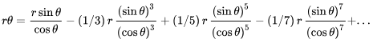
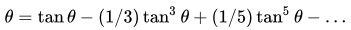

संगमग्राम के माधव
संगमग्राम के माधव (सी. 1350 - सी. 1425) एक प्रसिद्ध केरल गणितज्ञ-खगोलज्ञ थे, ये भारत के केरल राज्य के कोचीन जिले के निकट स्थित एक कस्बे इरन्नलक्कुता से थे। इन्हें केरलीय गणित सम्प्रदाय (केरल स्कूल ऑफ एस्ट्रोनॉमी एंड मैथेमैटिक्स) का संस्थापक माना जाता है। वे पहले व्यक्ति थे, जिन्होंने अनेक अनंत श्रेणियों वाले निकटागमन का विकास किया था, जिसे "सीमा-परिवर्तन को अनंत तक ले जाने में प्राचीन गणित की अनंत पद्धति से आगे एक निर्णायक कदम" कहा जाता है। उनकी खोज ने वे रास्ते खोल दिए, जिन्हें आज गणितीय विश्लेषण (मैथेमैटिकल एनालिसि) के नाम से जाना जाता है। माधवन ने अनंत श्रेणियों, कलन (कैलकुलस), त्रिकोणमिति, ज्यामिति और बीजगणित के अध्ययन में अग्रणी योगदान किया। वे मध्य काल के महानतम गणितज्ञों-खगोलज्ञों में से एक थे। कुछ विद्वानों ने यह विचार भी दिया है कि माधव के कार्य केरल स्कूल के माध्यम से, जेसूट मिशनरियों और व्यापारियों द्वारा, जो उस समय कोच्ची के प्राचीन पत्तन के आसपास काफी सक्रिय रहते थे, यूरोप तक भी प्रसारित हुए हैं। जिसके परिणामस्वरूप, इसका प्रभाव विश्लेषण और कलन में हुए बाद के यूरोपीय विकास क्रम पर भी पड़ा होगा.
नाम
माधव का जन्म इन्नाराप्पिली या इन्निनावाल्ली माधवन नम्बूदिरी के रूप में हुआ था। उन्होंने लिखा था कि उनके घर का नाम एक विहार से सम्बंधित था, जहां "बाकुलम" नाम का एक पौधा लगाया था। अच्युता पिशारती के अनुसार, (जिन्होंने माधवन द्वारा लिखी वेन्वारोहम पर एक टिप्पणी लिखी थी) बाकुलम स्थानीय स्तर पर "इरान्नी" के नाम से जाना जाता था। डाक्टर के.वी.शर्मा, जो माधवन से सम्बंधित कार्यों के अधिकारी हैं, उनका विचार है कि उनके घर का नाम इरिन्नाराप्पिली या इरिन्नरावल्ली है। इरिन्नालाक्कुता किसी समय इरिन्नातिकुटल के नाम से जाना जाता था। संगमग्रामम (साहित्य. संगमं = एकता, ग्रामं = ग्राम) द्रविड़ शब्द इरिनातिकुतल का संस्कृत में किया गया कामचलाऊ अनुवाद है, इस शब्द का अर्थ होता है 'इरु (दो) अनन्ति (बाज़ार) कुटल (एकता)' या दो बाज़ारों की एकता.
हिस्टोरियोग्राफ़ी
हालांकि माधव से पूर्व भी केरल में कुछ गणित संबंधी कार्यों के प्रमाण हैं (जैसे, सद्रत्नमाला सी. 1300, खंडित परिणामों का एक समुच्चय), उल्लेखों से यह स्पष्ट है कि मध्ययुगीन केरल में माधव ने समृद्ध गणितीय परंपरा के विकास के लिए एक सृजनात्मक आवेग प्रदान किया। हालांकि, माधव के अधिकांश मौलिक कार्य (मात्र कुछ को छोड़कर) खो चुके हैं। उनके उत्तरवर्ती गणितज्ञों के कार्यों में उनका उल्लेख किया गया है, विशेषतः नीलकंठ सोमायाजी के तंत्रसंग्रह (की. 1500) में अनेक sinθ और arctanθ वाली अनंत श्रेणियों के प्रसार के रूप में. सोलहवां सदी के लेख महाज्ञानयान प्रकार में माधव को π के अनेक श्रेणी व्युत्पादनों के स्रोत के रूप में किया गया है। ज्येष्ठदेव की युक्तिभाषा (सी. 1530) जोकि मलयालम भाषा में लिखी गयी है, में यह श्रेणियां 1/(1+x 2), जहां x= tan θ आदि, जैसे बहुपदों के लिए टेलर श्रेणी के प्रसार के रूप में प्रमाणों के साथ प्रस्तुत की गयी हैं।
इस प्रकार, वास्तव में कौन से कार्य माधव द्वारा किये गए हैं, यह एक विवाद का विषय है। युक्ति-दीपिका (जिसे तंत्रसंग्रह व्याख्या भी कहते हैं), संभवतः ज्येष्ठदेव के शिष्य, संकर वरियार द्वारा रचित है, यह sin θ, cos θ और arctan θ के लिए श्रेणी प्रसार के अनेक प्रारूप प्रस्तुत करती है, साथ ही साथ त्रिज्या और वृत्तखंड की लम्बाई के कुछ गुणनफल भी, जिसके अधिकांश संस्करण युक्तिभाषा में भी दिखायी पड़ते हैं। उस श्रेणी, जिसके बारे में राजगोपाल और रंगाचारी ने तर्क दिया है, का व्यापक रूप से उद्धरण मूल संस्कृत भाषा से नहीं दिया जाता, और चूंकि इनमे से कुछ श्रेणियों के लिए नीलकंठ ने माधव को श्रेय दिया है, इसलिए संभवतः कुछ अन्य प्रारूप भी माधव के कार्यों में से ही हो सकते हैं।
अन्य लोगों ने यह अनुमान लगाया है कि प्रारंभिक रचना कर्णपद्धति (सी. 1375-1475), या महाज्ञानयान प्रकार संभवतः माधव द्वारा लिखित हो सकते हैं, लेकिन इसकी सम्भावना बहुत कम है।कर्णपद्धति, के साथ ही केरल की और भी प्राचीन गणित रचना सदरत्नमाला और तंत्रसंग्रह तथा युक्तिभाषा पर, 1834 के चार्ल्स मैथ्यू व्हिश के एक लेख में विचार किया गया है, यह फ्लक्शन (अवकलन के लिए न्यूटन द्वारा दिया गया नाम) की खोज में न्यूटन पर प्राथमिकता हेतु उनका ध्यान आकर्षित करने वाला पहला लेख था। बीसवीं शताब्दी के मध्य में, रूसी विद्वान जुश्केविच ने माधव की विरासततुल्य कार्य का पुनरावलोकन किया और 1972 में सर्मा द्वारा केरल स्कूल का एक व्य्यापक निरीक्षण भी उपलब्ध करवाया गया।
वंशावली
योगदान
यदि हम गणित को बीजगणित की सीमित प्रक्रियाओं से अनंत की प्रक्रियाओं तक की एक श्रेणी के रूप में देखें तो इस परिवर्तन की ओर पहला कदम आदर्शतः अनंत श्रेणी के प्रसार के साथ शुरू होगा. यह अनंत श्रेणी की ओर वह परिवर्तन ही है, जिसके लिए माधव को श्रेय दिया जाता है। यूरोप में, ऐसी पहली श्रेणी का विकास 1667 में जेम्स ग्रेगोरी ने किया था। श्रेणी के सम्बन्ध में माधव का कार्य उल्लेखनीय है, लेकिन वह बात जो वास्तव में असाधारण है, वह उनके द्वारा किया गया त्रुटि पद (या संशोधन पद) का मूल्यांकन है। इससे यह पता चलता है कि अनंत श्रेणी की सीमा संबंधी प्रकृति को उन्होंने बहुत भली प्रकार समझा था। अतः, माधव ने ही अनंत श्रेणी प्रसार के अन्तर्निहित विचारों, घात श्रेणी, त्रिकोणमीतीय श्रेणी और अनंत श्रेणी के परिमेय निकटागमन के विचारों का आविष्कार किया होगा.हालांकि, जैसा ऊपर कहा गया है, विशुद्ध रूप से माधव द्वारा दिए गए परिणाम और उनके परवर्तियों द्वारा दिए गए परिणामों का निर्धारण कर पाना कुछ कठिन है। नीचे उन परिणाम का सारांश दिया जा रहा है, जिनके लिए विभिन्न विद्वानों द्वारा माधव को श्रेय दिया गया है।
अनंत श्रेणी
उनके अनेक योगदानों के अंतर्गत, उन्होंने sine, cosine, tangent और arctangent त्रिकोणमीतीय फलनों के लिए अनंत श्रेणी की खोज की और एक वृत्त की परिधि की गणना के लिए भी कई तरीके निकाले. युक्तिभाषा पुस्तक से ज्ञात माधव की एक श्रेणी है, जो स्पर्शज्या के व्युत्क्रम की घात श्रेणी का प्रमाण और व्युपादन सम्मिलित करती है, इसकी खोज माधव द्वारा ही की गयी थी। पुस्तक में ज्येष्ठदेव इस श्रेणी की व्याख्या इस प्रकार करते हैं।
इससे प्राप्त होगा

जो बाद में ऐसा परिणाम देता है:
- 
यह श्रेणी परंपरागत रूप से ग्रेगोरी (जेम्स ग्रेगोरी के नाम से, जिन्होंने इसकी खोज माधन से तीन शताब्दियों बाद की) श्रेणी के नाम से जानी जाती थी। यदि हम इस श्रेणी को ज्येष्ठदेव की खोज मानें तो भी यह ग्रेगोरी के काल से एक शताब्दी पहले की बात होगी और अवश्य ही इसी प्रकार की अन्य अनंत श्रेणियों की खोज माधव द्वारा की गयी है। आज, इसे माधव-ग्रेगोरी-लेबिनिज़ श्रेणी के नाम से जाना जाता है।
त्रिकोणमिति
माधव ने ज्याओं (sine) के लिए सबसे उपयुक्त सारिणी भी दी, जो दिए गए वृत्त के चतुर्थांश पर समान अंतराल पर खींची गयी अर्ध-ज्या जीवओं के मानों के रूप में परिभाषित थी। ऐसा माना जाता है कि उन्होंने यह अत्यंत सटीक सारिणी निम्न श्रेणी प्रसारों के आधार पर प्राप्त की होगी:
- sin q = q - q3/3! + q5/5! - ...
- cos q = 1 - q2/2! + q4/4! - ...
पाई (π) का मान
निम्नलिखित श्लोक में माधव ने वृत्त की परिधि और उसके व्यास का सम्बन्ध (अर्थात पाई का मान) बताया है जो इस श्लोक में भूतसंख्या के माध्यम से अभिव्यक्त किया गया है π के मान के सम्बन्ध में माधव के कार्य का उल्लेख हमें महाज्ञानयानप्रकार ("मेथड्स फॉर द ग्रेट साइंस") में मिला जहां कुछ विद्वान जैसे सर्मा, का यह मानना है कि हो सकता है यह पुस्तक स्वयं माधव ने ही लिखी हो, वहीं दूसरी ओर इसके 16वीं शताब्दी के परवर्तियों द्वारा लिखे जाने की सम्भावना अधिक है। यह पुस्तक अनेक प्रसारों के लिए माधव को ही श्रेय देती है और π के लिए निम्न अनन्त श्रेणी प्रसार देती है, जिसे अब माधव-लेबिनिज़ श्रेणी के नाम से जाना जाता है:
- व्यासे वारिधिनिहते रूपहृते व्याससागराभिहते।
- त्रिशरादिविषमसंख्यामत्तमृणं स्वं पृथक् क्रमात् कुर्यात् ॥
- यत्संख्ययात्र हरणे कृते निवृत्ता हृतिस्तु जामितया।
- तस्या उर्धगताया समसंख्या तद्दालं गुणोऽन्ते स्यात् ॥
- Rn = 1/(4n), or
- Rn = n/ (4n2 + 1), or
- Rn = (n2 + 1) / (4n3 + 5n).
- Rn = n/ (4n2 + 1), or
- गोलावाद
- मध्यमानयानप्रकर
- महाज्ञानयानप्रकर
- लग्नप्रकरण
- वेण्वारोह
- स्फुटचन्द्राप्ति
- अगणित-ग्रहचार
- चन्द्रवाक्यानि
जिसे उन्होंने चाप-स्पर्शज्या फलन के घात श्रेणी प्रसार से प्राप्त किया था। हालांकि, सबसे अधिक प्रभावित करने वाली बात यह है कि उन्होंने एक संशोधन पद, Rn भी दिया, जो n पदों तक गणना के बाद आने वाली त्रुटि के लिए था।
माधव ने Rn के तीन प्रारूप दिए थे जो निकटागमन को संशोधित करते थे, इसने नाम हैं
जहां तीसरे संशोधन के फलस्वरूप π का अत्यंत परिशुद्ध परिकलन मिलता है।
इस प्रकार के संशोधन पद तक कैसे पहुंचे। सबसे विश्वसनीय तथ्य यह है कि ये सतत भिन्न के प्रथम तीन अभिसारों के रूप में आते हैं जिसे स्वयं ही π के मानक निकट मान से व्युत्पन्न किया जा सकता है, यह 62832/20000 है (मूल पांचवें सी. परिकलन के लिए देखें, आर्यभट्ट). उन्होंने π की मूल अनंत श्रेणी के रूपांतरण द्वारा अनंत श्रेणी प्राप्त करके, एक और भी शीघ्रतापूर्वक अभिसारित होने वाली श्रेणी दी थी

π के निकटतम मान के परिकलन के लिए पहले 21 पदों के प्रयोग द्वारा, उन्होंने एक ऐसा मान प्राप्त किया जो दशमलव के 11 स्थानों तक सही था (3.14159265359). 3.1415926535898 का मान दशमलव के 13 स्थानों तक सही, के लिए भी कभी-कभी माधव को श्रेय दिया जाता है। लेकिन यह शायद यह उनके किसी शिष्य के द्वारा दिया गया है। यह पांचवी शताब्दी से π के सबसे परिशुद्ध निकटतम मानों में से था (देखें, हिस्ट्री ऑफ न्यूमेरिकल अप्रौक्सिमेशन ऑफ π). पुस्तक सदरत्नमाला, जिसे आमतौर पर माधव के काल से पूर्व की पुस्तक माना जाता है, भी आश्चर्यजनक रूप से π का अत्यंत परिशुद्ध मान देती है, π = 3.14159265358979324 (दशमलव के 17 स्थानों तक सही). इस आधार पर, आर. गुप्ता ने यह तर्क दिया है कि हो सकता है यह पुस्तक भी माधव द्वारा ही लिखी गयी हो.
बीजगणित
माधव ने वृत्तखंड की लम्बाई की अन्य श्रेणियों और इससे सम्बंधित π की परिमेय भिन्न संख्याओं के निकटतम मान पर भी अनुसन्धान किया, उन्होंने बहुपद प्रसार के तरीके खोजे, अनंत श्रेणी के लिए अभिसारिता परीक्षण खोजा और अनंत सतत भिन्न संख्याओं का विश्लेषण किया। उन्होंने पुनरावृत्ति द्वारा गूढ़ समीकरणों का भी हल निकला और सतत भिन्न संख्याओं के द्वारा गूढ़ संख्याओं का निकटतम मान भी प्राप्त किया।
कलन (कैल्क्युलस)
माधव ने कलन के विकास की नींव रखी, जिसे उनके परवर्तियों ने केरला स्कूल ऑफ एस्ट्रोनौमी एंड मैथेमैटिक्स में आगे विकसित किया। (यह ध्यान में रखना आवश्यक है कि कलन के कुछ सिद्धांत प्राचीन गणितज्ञों को ज्ञात थे।) माधव ने भी प्राचीन कार्यों से प्राप्त कुछ परिणामों को आगे बढ़ाया, जिसमे भास्कर II के कार्य भी सम्मिलित थे। कलन में, उन्होंने अवकलन, समाकलन के प्रारंभिक प्रारूप का प्रयोग किया है और उन्होंने या उनके शिष्यों ने साधारण फलनो के समाकलन का विकास किया।
माधव की कृतियाँ
के.वी. शर्मा ने माधव को निम्नलिखित पुस्तकों का रचयिता बताया है:
केरलीय गणित सम्प्रदाय
माधवन के बाद केरलीय गणित सम्प्रदाय कम से कम दो शताब्दियों तक फलता-फूलता रहा। ज्येष्ठदेव से हमें समाकलन का विचार मिला, जिसे संकलितम कहा गया था, (हिंदी अर्थ संग्रह), जैसा कि इस कथन में है: एकाद्येकोथर पद संकलितम समं पदवर्गठिन्ते पकुति, जो समाकलन को एक ऐसे चर (पद) के रूप में अनुवादित करता है जो चर के वर्ग के आधे के बराबर होगा; अर्थात x dx का समाकलन x2 / 2 के बराबर होगा। यह स्पष्ट रूप से समाकलन की शुरुआत है। इससे सम्बंधित एक अन्य परिणाम कहता है कि किसी वक्र के अन्दर का क्षेत्रफल उसके समाकल के बराबर होता है। इसमें से अधिकांश परिणाम यूरोप में ऐसे ही परिणामों के अस्तित्व से कई शताब्दियों पूर्व के हैं। अनेक प्रकार से, ज्येष्ठदेव की युक्तिभाषा कलन पर विश्व की पहली पुस्तक मानी जा सकती है।
प्रभाव
यूरोप में संभावित प्रसार
मालाबार समुद्र तट पर यूरोपीय दिशा निर्देशकों से पहले संपर्क के दौरान, 15वीं-16वीं शताब्दी में केरल स्कूल काफी प्रसिद्ध था। उस समय, संगमग्राम के निकट स्थित कोच्ची का पत्तन समुद्रीय व्यापार का एक प्रमुख केंद्र था और अनेकों जेसूट मिशनरियां और व्यापारी इस क्षेत्र में सक्रिय थे। केरल स्कूल की प्रसिद्धि को देखते हुए और इस काल के दौरान स्थानीय विद्वानों के बीच जेसूट समूह के कुछ लोगों द्वारा इसकी ओर दिखायी गयी रूचि के फलस्वरूप कुछ विद्वानों, जिसमे, यू. मैनचेस्टर के, जे. जोसेफ भी शामिल हैं, ने कहा कि इस काल के दौरान केरल स्कूल से लेख यूरोप पहुंचे हैं, जो न्यूटन के समय से एक शताब्दी के पूर्व का समय था। हालांकि इन लेखों का कोई भी यूरोपीय अनुवाद अस्तित्व में नहीं है, फिर भी यह संभव है कि इन विचारों ने विश्लेषण और कलन में बाद के यूरोपीय विकासों को प्रभावित किया हो. (अधिक विवरण के लिए देखें, केरल स्कूल). यह लेखक के विचारों को उचित ढंग से न समझ पाने के कारण हुआ। 16 वीं शताब्दी में जेसूट के लोग, जो माधवन और उनके शिष्यों की प्रतिष्ठा से परिचित थे, के लिए यह लगभग असंभव था कि वे संस्कृत और मलयालम का अध्ययन करके इसे यूरोपीय गणितज्ञों तक पहुंचाएं, इसके स्थान पर वे खुद ही इस खोज को करने का दावा करते हैं।